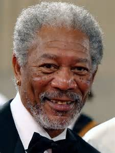

Легендарный американский актер, обладатель премии «Оскар». Знаменит своим глубоким, узнаваемым голосом. Известные фильмы: «Побег из Шоушенка», «Семь», «Малышка на миллион».
Британский рок-музыкант и композитор, фронтмен культовой группы Radiohead. Его стиль отличается меланхоличностью, использованием фальцета и экспериментальным подходом к звучанию.
Один из самых популярных американских актеров. Обладатель двух премий «Оскар». Вы точно знаете его по ролям в фильмах «Бойцовский клуб», «Одиннадцать друзей Оушена» и «Однажды в Голливуде».